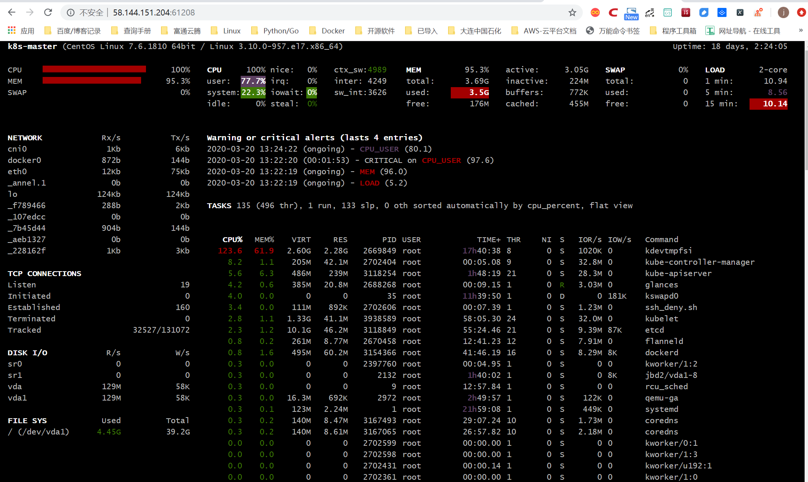

Contents
18.6. 业务服务监控详解¶
18.6.1. 文件内容差异对比方法¶
1.两个字符串的差异对比方法¶
打印输出差异
def File_difference(src_file, dest_file):
import os
import difflib
if os.path.isfile(src_file) and os.path.isfile(dest_file):
d = difflib.Differ()
text1_info = open(src_file).read().splitlines()
text2_info = open(dest_file).read().splitlines()
diff = d.compare(text1_info, text2_info)
print("\n".join(list(diff)))
else:
raise Exception("The object of this function comparison must be a file!")
File_difference("test001.txt", "test002.txt")
转换为html后查看差异输出
def File_difference_to_Html(src_file, dest_file):
import os
import difflib
if os.path.isfile(src_file) and os.path.isfile(dest_file):
d = difflib.HtmlDiff()
text1_info = open(src_file).read().splitlines()
text2_info = open(dest_file).read().splitlines()
html = d.make_file(text1_info, text2_info)
with open("comp.html", "w") as f:
f.write(html)
else:
raise Exception("The object of this function comparison must be a file!")
File_difference_to_Html("test001.txt", "test002.txt")
2.对比Nginx配置文件差异¶
#!/usr/bin/python
import difflib
import sys
try:
textfile1 = sys.argv[1]
textfile2 = sys.argv[2]
except Exception as e:
print("Error:" + str(e))
print("Usage: simple3.py filename1 filename2")
sys.exit()
def readfile(filename):
try:
fileHandle = open(filename, 'rb')
text = fileHandle.read().splitlines()
fileHandle.close()
return text
except IOError as error:
print('Read file Error:' + str(error))
sys.exit()
if textfile1 == "" or textfile2 == "":
print("Usage: simple3.py filename1 filename2")
sys.exit()
text1_lines = readfile(textfile1)
text2_lines = readfile(textfile2)
d = difflib.HtmlDiff()
print(d.make_file(text1_lines, text2_lines))
18.6.2. 文件与目录差异对比¶
实践：校验源与备份目录差异¶
定期校验源目录和备份目录，并进行增量补备份
#!/usr/bin/env python
'''
定期校验源目录和备份目录，并进行增量补备份
'''
import os, sys
import filecmp
import re
import shutil
holderlist = []
def compareme(dir1, dir2):
dircomp = filecmp.dircmp(dir1, dir2)
only_in_one = dircomp.left_only
diff_in_one = dircomp.diff_files
dirpath = os.path.abspath(dir1)
[holderlist.append(os.path.abspath(os.path.join(dir1, x))) for x in only_in_one]
[holderlist.append(os.path.abspath(os.path.join(dir1, x))) for x in diff_in_one]
if len(dircomp.common_dirs) > 0:
for item in dircomp.common_dirs:
compareme(os.path.abspath(os.path.join(dir1, item)), \
os.path.abspath(os.path.join(dir2, item)))
return holderlist
def main():
if len(sys.argv) > 2:
dir1 = sys.argv[1]
dir2 = sys.argv[2]
else:
print("Usage: ", sys.argv[0], "datadir backupdir")
sys.exit()
source_files = compareme(dir1, dir2)
dir1 = os.path.abspath(dir1)
if not dir2.endswith('/'): dir2 = dir2 + '/'
dir2 = os.path.abspath(dir2)
destination_files = []
createdir_bool = False
for item in source_files:
destination_dir = re.sub(dir1, dir2, item)
destination_files.append(destination_dir)
if os.path.isdir(item):
if not os.path.exists(destination_dir):
os.makedirs(destination_dir)
createdir_bool = True
if createdir_bool:
destination_files = []
source_files = []
source_files = compareme(dir1, dir2)
for item in source_files:
destination_dir = re.sub(dir1, dir2, item)
destination_files.append(destination_dir)
print("update item:")
print(source_files)
copy_pair = zip(source_files, destination_files)
for item in copy_pair:
if os.path.isfile(item[0]):
shutil.copyfile(item[0], item[1])
if __name__ == '__main__':
main()
18.6.3. 发送电子邮件模块smtplib¶
1.简单的邮件¶
import smtplib
import string
HOST = "smtp.gmail.com"
SUBJECT = "Test email from Python"
TO = "test@qq.com"
FROM = "test@gmail.com"
text = "Python rules them all!"
BODY = string.join((
"From: %s" % FROM,
"To: %s" % TO,
"Subject: %s" % SUBJECT ,
"",
text
), "\r\n")
server = smtplib.SMTP()
server.connect(HOST,"25")
server.starttls()
server.login("test@gmail.com","123456")
server.sendmail(FROM, [TO], BODY)
server.quit()
2.实现html数据报表格式的邮件¶
#coding: utf-8
import smtplib
from email.mime.multipart import MIMEMultipart
from email.mime.text import MIMEText
from email.mime.image import MIMEImage
HOST = "smtp.gmail.com"
SUBJECT = u"业务性能数据报表"
TO = "test@qq.com"
FROM = "test@gmail.com"
def addimg(src,imgid):
fp = open(src, 'rb')
msgImage = MIMEImage(fp.read())
fp.close()
msgImage.add_header('Content-ID', imgid)
return msgImage
msg = MIMEMultipart('related')
msgtext = MIMEText("""
<table width="600" border="0" cellspacing="0" cellpadding="4">
<tr bgcolor="#CECFAD" height="20" style="font-size:14px">
<td colspan=2>*官网性能数据 <a href="monitor.domain.com">更多>></a></td>
</tr>
<tr bgcolor="#EFEBDE" height="100" style="font-size:13px">
<td>
<img src="cid:io"></td><td>
<img src="cid:key_hit"></td>
</tr>
<tr bgcolor="#EFEBDE" height="100" style="font-size:13px">
<td>
<img src="cid:men"></td><td>
<img src="cid:swap"></td>
</tr>
</table>""","html","utf-8")
msg.attach(msgtext)
msg.attach(addimg("img/bytes_io.png","io"))
msg.attach(addimg("img/myisam_key_hit.png","key_hit"))
msg.attach(addimg("img/os_mem.png","men"))
msg.attach(addimg("img/os_swap.png","swap"))
msg['Subject'] = SUBJECT
msg['From']=FROM
msg['To']=TO
try:
server = smtplib.SMTP()
server.connect(HOST,"25")
server.starttls()
server.login("test@gmail.com","123456")
server.sendmail(FROM, TO, msg.as_string())
server.quit()
print "邮件发送成功！"
except Exception, e:
print "失败："+str(e)
3.实现图文格式的服务器性能报表邮件¶
#coding: utf-8
import smtplib
from email.mime.multipart import MIMEMultipart
from email.mime.text import MIMEText
from email.mime.image import MIMEImage
HOST = "smtp.gmail.com"
SUBJECT = u"业务性能数据报表"
TO = "test@qq.com"
FROM = "test@gmail.com"
def addimg(src,imgid):
fp = open(src, 'rb')
msgImage = MIMEImage(fp.read())
fp.close()
msgImage.add_header('Content-ID', imgid)
return msgImage
msg = MIMEMultipart('related')
msgtext = MIMEText("""
<table width="600" border="0" cellspacing="0" cellpadding="4">
<tr bgcolor="#CECFAD" height="20" style="font-size:14px">
<td colspan=2>*官网性能数据 <a href="monitor.domain.com">更多>></a></td>
</tr>
<tr bgcolor="#EFEBDE" height="100" style="font-size:13px">
<td>
<img src="cid:io"></td><td>
<img src="cid:key_hit"></td>
</tr>
<tr bgcolor="#EFEBDE" height="100" style="font-size:13px">
<td>
<img src="cid:men"></td><td>
<img src="cid:swap"></td>
</tr>
</table>""","html","utf-8")
msg.attach(msgtext)
msg.attach(addimg("img/bytes_io.png","io"))
msg.attach(addimg("img/myisam_key_hit.png","key_hit"))
msg.attach(addimg("img/os_mem.png","men"))
msg.attach(addimg("img/os_swap.png","swap"))
msg['Subject'] = SUBJECT
msg['From']=FROM
msg['To']=TO
try:
server = smtplib.SMTP()
server.connect(HOST,"25")
server.starttls()
server.login("test@gmail.com","123456")
server.sendmail(FROM, TO, msg.as_string())
server.quit()
print "邮件发送成功！"
except Exception, e:
print "失败："+str(e)
4.实现带附件格式的业务服务质量周报邮件¶
#coding: utf-8
import smtplib
from email.mime.multipart import MIMEMultipart
from email.mime.text import MIMEText
from email.mime.image import MIMEImage
HOST = "smtp.gmail.com"
SUBJECT = u"业务性能数据报表"
TO = "test@qq.com"
FROM = "test@gmail.com"
def addimg(src,imgid):
fp = open(src, 'rb')
msgImage = MIMEImage(fp.read())
fp.close()
msgImage.add_header('Content-ID', imgid)
return msgImage
msg = MIMEMultipart('related')
msgtext = MIMEText("""
<table width="600" border="0" cellspacing="0" cellpadding="4">
<tr bgcolor="#CECFAD" height="20" style="font-size:14px">
<td colspan=2>*官网性能数据 <a href="monitor.domain.com">更多>></a></td>
</tr>
<tr bgcolor="#EFEBDE" height="100" style="font-size:13px">
<td>
<img src="cid:io"></td><td>
<img src="cid:key_hit"></td>
</tr>
<tr bgcolor="#EFEBDE" height="100" style="font-size:13px">
<td>
<img src="cid:men"></td><td>
<img src="cid:swap"></td>
</tr>
</table>""","html","utf-8")
msg.attach(msgtext)
msg.attach(addimg("img/bytes_io.png","io"))
msg.attach(addimg("img/myisam_key_hit.png","key_hit"))
msg.attach(addimg("img/os_mem.png","men"))
msg.attach(addimg("img/os_swap.png","swap"))
msg['Subject'] = SUBJECT
msg['From']=FROM
msg['To']=TO
try:
server = smtplib.SMTP()
server.connect(HOST,"25")
server.starttls()
server.login("test@gmail.com","123456")
server.sendmail(FROM, TO, msg.as_string())
server.quit()
print "邮件发送成功！"
except Exception, e:
print "失败："+str(e)
18.6.4. 探测Web服务质量¶
#!/usr/bin/python
#encoding:utf-8
#*/30 * * * * /usr/bin/python /root/dnstime.py >> /root/myreport.txt 2>&1
import os
import time
import sys
import pycurl
#import commands
import time
URL="http://imp-east.example.net"
ISOTIMEFORMAT="%Y-%m-%d %X"
c = pycurl.Curl()
c.setopt(pycurl.URL, URL)
c.setopt(pycurl.CONNECTTIMEOUT, 5)
c.setopt(pycurl.TIMEOUT, 5)
c.setopt(pycurl.FORBID_REUSE, 1)
c.setopt(pycurl.MAXREDIRS, 1)
c.setopt(pycurl.NOPROGRESS, 1)
c.setopt(pycurl.DNS_CACHE_TIMEOUT,30)
indexfile = open(os.path.dirname(os.path.realpath(__file__))+"/content.txt", "wb")
c.setopt(pycurl.WRITEHEADER, indexfile)
c.setopt(pycurl.WRITEDATA, indexfile)
try:
c.perform()
except Exception,e:
print "connecion error:"+str(e)
indexfile.close()
c.close()
sys.exit()
NAMELOOKUP_TIME = c.getinfo(c.NAMELOOKUP_TIME)
CONNECT_TIME = c.getinfo(c.CONNECT_TIME)
PRETRANSFER_TIME = c.getinfo(c.PRETRANSFER_TIME)
STARTTRANSFER_TIME = c.getinfo(c.STARTTRANSFER_TIME)
TOTAL_TIME = c.getinfo(c.TOTAL_TIME)
HTTP_CODE = c.getinfo(c.HTTP_CODE)
SIZE_DOWNLOAD = c.getinfo(c.SIZE_DOWNLOAD)
HEADER_SIZE = c.getinfo(c.HEADER_SIZE)
SPEED_DOWNLOAD=c.getinfo(c.SPEED_DOWNLOAD)
print "HTTP状态码：%s" %(HTTP_CODE)
print "DNS解析时间：%.2f ms"%(NAMELOOKUP_TIME*1000)
print "建立连接时间：%.2f ms" %(CONNECT_TIME*1000)
print "准备传输时间：%.2f ms" %(PRETRANSFER_TIME*1000)
print "传输开始时间：%.2f ms" %(STARTTRANSFER_TIME*1000)
print "传输结束总时间：%.2f ms" %(TOTAL_TIME*1000)
print "下载数据包大小：%d bytes/s" %(SIZE_DOWNLOAD)
print "HTTP头部大小：%d byte" %(HEADER_SIZE)
print "平均下载速度：%d bytes/s" %(SPEED_DOWNLOAD)
indexfile.close()
c.close()
print time.strftime( ISOTIMEFORMAT, time.gmtime( time.time() ) )
print "================================================================"
18.6.5. 检测主机存活状态¶
#!/usr/bin/python
import os
import re
import time
import sys
import subprocess
lifeline = re.compile(r"(\d) received")
report = ("No response","Partial Response","Alive")
print time.ctime()
for host in range(1,254):
ip = "192.168.1."+str(host)
pingaling = subprocess.Popen(["ping","-q", "-c 2", "-r", ip], shell=False, stdin=subprocess.PIPE, stdout=subprocess.PIPE)
print "Testing ",ip,
while 1:
pingaling.stdout.flush()
line = pingaling.stdout.readline()
if not line: break
igot = re.findall(lifeline,line)
if igot:
print report[int(igot[0])]
print time.ctime()
18.6.6. 检测主机存活状态示例1¶
#!/usr/bin/env python
# -*- coding:utf8 -*-
# auther; 18793
# Date：2020/3/21 10:50
# filename: ping001.py
from __future__ import print_function
import subprocess
import threading
def is_reacheable(ip):
if subprocess.call(["ping", "-c", "1", ip]):
print("{0} is alive".format(ip))
else:
print("{0} is unreacheable".format(ip))
def main():
with open('ips.txt') as f:
lines = f.readlines()
threads = []
for line in lines:
thr = threading.Thread(target=is_reacheable, args=(line,))
thr.start()
threads.append(thr)
for thr in threads:
thr.join()
if __name__ == '__main__':
main()
18.6.7. 使用生产者消费者模型来减少线程数量¶
#!/usr/bin/env python
# -*- coding:utf8 -*-
# auther; 18793
# Date：2020/3/21 10:54
# filename: ping002.py
from __future__ import print_function
import subprocess
import threading
from queue import Queue
from queue import Empty
def call_ping(ip):
if subprocess.call(["ping", "-c", "1", ip]):
print("{0} is alive".format(ip))
else:
print("{0} is unreacheable".format(ip))
def is_reacheable(q):
try:
while True:
ip = q.get_nowait()
call_ping(ip)
except Empty:
pass
def main():
q = Queue()
with open('ips.txt') as f:
for line in f:
q.put(line)
threads = []
for i in range(10):
thr = threading.Thread(target=is_reacheable, args=(q,))
thr.start()
threads.append(thr)
for thr in threads:
thr.join()
if __name__ == '__main__':
main()
18.6.8. Python实现端口扫描¶
示例1¶
#!/usr/bin/env python
# -*- coding:utf8 -*-
# auther; 18793
# Date：2020/3/21 10:58
# filename: sample01.py
from __future__ import print_function
from socket import *
def conn_scan(host, port):
conn = socket(AF_INET, SOCK_STREAM)
try:
conn.connect((host, port))
print(host, port, 'is available')
except Exception as e:
print(host, port, 'is not available', e)
finally:
conn.close()
def main():
host = "192.168.0.1"
for port in range(60, 5000):
conn_scan(host, port)
if __name__ == '__main__':
main()
示例2，使用telnet模块¶
新增一个超时的时间
#!/usr/bin/env python
# -*- coding:utf8 -*-
# auther; 18793
# Date：2020/3/21 11:01
# filename: smaple02.py
# !/usr/bin/python
from __future__ import print_function
import telnetlib
def conn_scan(host, port):
t = telnetlib.Telnet()
try:
t.open(host, port, timeout=1)
print(host, port, 'is avaliable')
except Exception as e:
print(host, port, 'is not avaliable',e)
finally:
t.close()
def main():
host = '192.168.0.1'
for port in range(80, 5000):
conn_scan(host, port)
if __name__ == '__main__':
main()
18.6.9. 实现高效的端口扫描器¶
#!/usr/bin/env python
# -*- coding: utf-8 -*-
import sys
import nmap
scan_row = []
input_data = raw_input('Please input hosts and port: ')
scan_row = input_data.split(" ")
if len(scan_row) != 2:
print
"Input errors,example \"192.168.1.0/24 80,443,22\""
sys.exit(0)
hosts = scan_row[0] # 接收用户输入的主机
port = scan_row[1] # 接收用户输入的端口
try:
nm = nmap.PortScanner() # 创建端口扫描对象
except nmap.PortScannerError:
print('Nmap not found', sys.exc_info()[0])
sys.exit(0)
except:
print("Unexpected error:", sys.exc_info()[0])
sys.exit(0)
try:
nm.scan(hosts=hosts, arguments=' -v -sS -p ' + port) # 调用扫描方法，参数指定扫描主机hosts，nmap扫描命令行参数arguments
except Exception, e:
print
"Scan erro:" + str(e)
for host in nm.all_hosts(): # 遍历扫描主机
print('----------------------------------------------------')
print('Host : %s (%s)' % (host, nm[host].hostname())) # 输出主机及主机名
print('State : %s' % nm[host].state()) # 输出主机状态，如up、down
for proto in nm[host].all_protocols(): # 遍历扫描协议，如tcp、udp
print('----------')
print('Protocol : %s' % proto) # 输入协议名
lport = nm[host][proto].keys() # 获取协议的所有扫描端口
lport.sort() # 端口列表排序
for port in lport: # 遍历端口及输出端口与状态
print('port : %s\tstate : %s' % (port, nm[host][proto][port]['state']))
18.6.10. 使用进程池ThreadPoolExecutor抢占模式并发扫描¶
#!/usr/bin/env python
# -*- coding:utf8 -*-
# auther; 18793
# Date：2020/3/21 10:58
# filename: sample01.py
from __future__ import print_function
from socket import *
def conn_scan(port):
conn = socket(AF_INET, SOCK_STREAM)
host = "192.168.0.1"
try:
conn.connect((host, port))
print(host, port, 'is available')
except Exception as e:
print(host, port, 'is not available', e)
finally:
conn.close()
def mulit_run(func, max_workers, args):
"""
多线程执行命令
:param func: 执行函数
:param max_workers: 最多线程数
:param args: 可迭代对象
:return:
"""
from concurrent.futures import ThreadPoolExecutor, wait, ALL_COMPLETED, FIRST_COMPLETED
executor = ThreadPoolExecutor(max_workers=max_workers)
all_task = [executor.submit(func, i) for i in args]
wait(all_task, return_when=ALL_COMPLETED)
def main():
ports = [p for p in range(60, 1000)]
mulit_run(conn_scan, len(ports), ports)
if __name__ == '__main__':
main()
18.6.11. Redis内存检测¶
#!/usr/bin/python
#Check redis Nagios Plungin,Please install the redis-py module.
import redis
import sys
STATUS_OK = 0
STATUS_WARNING = 1
STATUS_CRITICAL = 2
HOST = sys.argv[1]
PORT = int(sys.argv[2])
WARNING = float(sys.argv[3])
CRITICAL = float(sys.argv[4])
def connect_redis(host, port):
r = redis.Redis(host, port, socket_timeout = 5, socket_connect_timeout = 5)
return r
def main():
r = connect_redis(HOST, PORT)
try:
r.ping()
except:
print HOST,PORT,'down'
sys.exit(STATUS_CRITICAL)
redis_info = r.info()
used_mem = redis_info['used_memory']/1024/1024/1024.0
used_mem_human = redis_info['used_memory_human']
if WARNING <= used_mem < CRITICAL:
print HOST,PORT,'use memory warning',used_mem_human
sys.exit(STATUS_WARNING)
elif used_mem >= CRITICAL:
print HOST,PORT,'use memory critical',used_mem_human
sys.exit(STATUS_CRITICAL)
else:
print HOST,PORT,'use memory ok',used_mem_human
sys.exit(STATUS_OK)
if __name__ == '__main__':
main()
18.6.12. 交互式监控工具glances¶
galnces是一款使用Python语言开发、基于psutil的跨平台系统监控工具，在所有的Linux命令行工具中，它与top命令最相似。 都是命令行交互式监控工具，但是glances实现了比top命令更齐全的监控，提供了更加丰富的功能。
使用¶
k8s-master (CentOS Linux 7.6.1810 64bit / Linux 3.10.0-957.el7.x86_64) Uptime: 18 days, 2:20:22
CPU [|||||||||||||||||||||||||||||||||||||||||||||||100.0%] CPU 100.0% nice: 0.0% ctx_sw: 2K MEM 94.9% active: 3.07G SWAP 0.0% LOAD 2-core
MEM [|||||||||||||||||||||||||||||||||||||||||||| 94.9%] user: 98.0% irq: 0.0% inter: 2590 total: 3.69G inactive: 238M total: 0 1 min: 5.57
SWAP [ 0.0%] system: 2.0% iowait: 0.0% sw_int: 2517 used: 3.50G buffers: 8.73M used: 0 5 min: 8.79
idle: 0.0% steal: 0.0% free: 193M cached: 492M free: 0 15 min: 10.76
NETWORK Rx/s Tx/s TASKS 133 (483 thr), 2 run, 130 slp, 1 oth sorted automatically by CPU consumption
cni0 1Kb 1Kb
docker0 0b 0b CPU% MEM% VIRT RES PID USER TIME+ THR NI S R/s W/s Command
eth0 5Kb 10Kb 189.5 61.9 2.60G 2.28G 2669849 root 65h26:10 8 0 S 0 0 /tmp/kdevtmpfsi
flannel.1 0b 0b 4.0 0.6 394M 22.8M 2667601 root 0:00 1 0 R 0 0 /usr/bin/python /usr/bin/glances
lo 58Kb 58Kb 2.3 1.2 1.33G 46.8M 3938589 root 34:30 24 0 S 1M 0 /usr/bin/kubelet --bootstrap-kubeconfig=/etc/kubernetes/bootstrap
veth0f789466 0b 0b 1.3 1.6 495M 61.1M 3154366 root 41:29 16 0 S 0 0 /usr/bin/dockerd -H tcp://0.0.0.0:2375 -H unix://var/run/docker.s
veth7b45d44 0b 0b 0.7 6.3 486M 238M 3118254 root 1h48:12 21 0 S 0 0 kube-apiserver --advertise-address=192.168.1.10 --allow-privilege
veth107edcc 0b 0b 0.7 1.3 10.1G 47.8M 3118849 root 50:27 21 0 S 169K 13K etcd --advertise-client-urls=https://192.168.1.10:2379 --cert-fil
vethaeb1327 0b 0b 0.3 0.2 140M 9.44M 3167493 root 12:04 10 0 S 346K 0 //coredns -conf /etc/coredns/Corefile
vethe228162f 1Kb 1Kb 0.3 0.2 46.5M 9.05M 3860464 root 0:07 1 0 S 0 0 /usr/lib/systemd/systemd-journald
0.3 0.2 140M 8.62M 3167065 root 12:15 10 0 S 0 0 //coredns -conf /etc/coredns/Corefile
TCP CONNECTIONS 0.0 0.9 1.13G 35.3M 156209 root 8:15 30 0 S 0 0 /usr/bin/containerd
Listen 16 0.0 0.8 623M 31.8M 2656039 root 0:00 7 0 S 0 0 docker -H 159.255.180.10 ps -a --no-trunc
Initiated 0 0.0 0.5 415M 18.0M 5021 root 2:36 3 0 S 0 5K /usr/sbin/rsyslogd -n
Established 156 0.0 0.4 117M 13.7M 2665945 root 2:16 7 0 S 189K 0 /var/tmp/kinsing
Terminated 0 0.0 0.3 560M 10.9M 4725 root 2:56 5 0 S 0 0 /usr/bin/python2 -Es /usr/sbin/tuned -l -P
Tracked 14922/131072 0.0 0.2 598M 9.02M 2762 polkitd 1:04 7 0 S 0 0 /usr/lib/polkit-1/polkitd --no-debug
0.0 0.2 121M 8.95M 2477499 root 0:00 1 0 S 0 0 -bash
DISK I/O R/s W/s 0.0 0.2 121M 8.95M 3216944 root 1:43 8 0 S 0 0 //portainer
sr0 0 0 0.0 0.2 137M 8.92M 3166958 root 5:58 8 0 S 3M 0 /usr/local/bin/kube-proxy --config=/var/lib/kube-proxy/config.con
sr1 0 0 0.0 0.2 261M 8.03M 2670458 root 3:24 12 0 S 0 0 flanneld --ip-masq --kube-subnet-mgr
vda 2.86M 22K 0.0 0.2 74.5M 6.39M 566323 root 9:01 9 0 S 0 0 /etc/lvmetad
vda1 2.86M 22K 0.0 0.1 110M 4.23M 2667602 root 0:00 1 0 S 0 0 sshd: [accepted]
0.0 0.1 105M 3.02M 3166776 root 0:08 10 0 S 0 0 containerd-shim -namespace moby -workdir /var/lib/containerd/io.c
FILE SYS Used Total 0.0 0.1 123M 2.65M 1 root 8:39 1 0 S 0 0 /usr/lib/systemd/systemd --system --deserialize 15
/ (vda1) 4.45G 39.2G 0.0 0.0 151M 1.44M 2474275 root 0:00 1 0 S 0 0 0
0.0 0.0 105M 1.37M 3166814 root 0:07 10 0 S 0 0 containerd-shim -namespace moby -workdir /var/lib/containerd/io.c
0.0 0.0 57.0M 1.37M 2763 dbus 3:01 1 0 S 0 0 /usr/bin/dbus-daemon --system --address=systemd: --nofork --nopid
0.0 0.0 26.0M 1.23M 2760 root 1:21 1 0 S 0 0 /usr/lib/systemd/systemd-logind
0.0 0.0 110M 1.21M 279077 root 1:05 1 0 S 0 0 /usr/sbin/sshd -D
如果我们安装了Bottle这个web框架，还能够通过web浏览器显示和命令行终端相同的监控界面。
[root@k8s-master ~]# pip install Bottle
[root@k8s-master ~]# glances -w
Glances Web User Interface started on http://0.0.0.0:61208/

glances还支持将采集的数据导人到其他服务中心,包括
InfluxDB,Cassandra,CouchDB,OpenTSDB,Prometheus,StatsD,ElasticSearch,RabbitMQ/ActiveMQ,ZeroMQ,Kafka和Riemann。
18.6.13. 使用Python监控Linux¶
#!/usr/bin/env python
# -*- coding:utf8 -*-
# auther; 18793
# Date：2020/3/20 14:06
# filename: sample01.py
from collections import namedtuple
Disk = namedtuple('Disk', ' major_number minor_number device_name'
' read_count read_merged_count read_sections'
' time_spent_reading write_count write_merged_count'
' write_sections time_spent_write io_request'
' time_spent_doing_io weighted_time_spent_doing_io')
def get_disk_info(device):
"""
从/proc/diskstats中读取磁盘的IO信息
cat /proc/diskstats
253 0 vda 371112865 1361738 48576597402 2709064336 13868406 4698463 234200920 77805203 0 81962145 2378917941
:param device:
:return:
"""
with open("/proc/diskstats") as f:
for line in f:
if line.split()[2] == device:
return Disk(*(line.split()))
raise RuntimeError("device ({0}) not found !".format(device))
def main():
disk_info = get_disk_info("vdc")
print(disk_info)
print("磁盘写次数: {0}".format(disk_info.write_count))
print("磁盘写字节数: {0}".format(disk_info.write_sections * 512))
print("磁盘写延迟: {0}".format(disk_info.time_spent_write))
if __name__ == '__main__':
main()